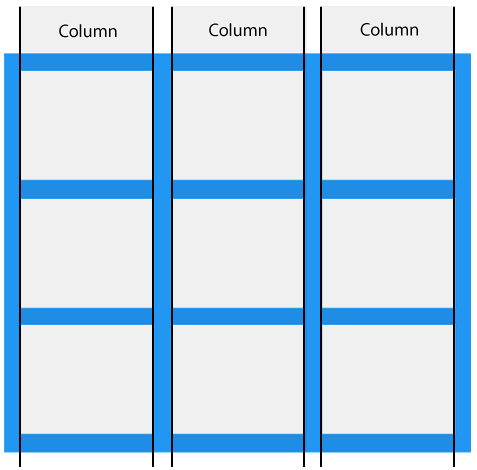
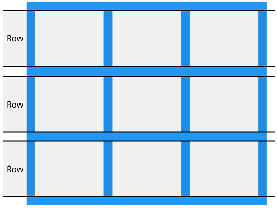
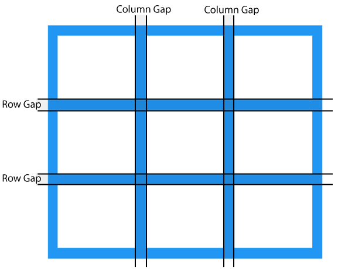
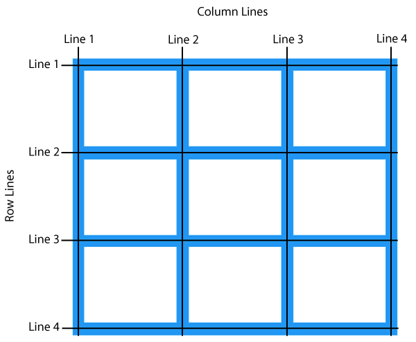
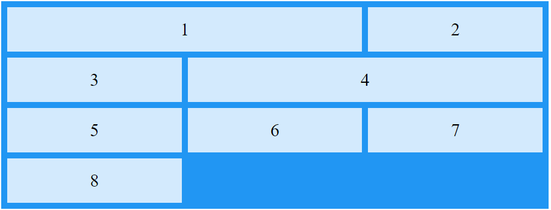

gridUm layout muito comum em web design é ter um cabeçalho, uma barra lateral, um corpo e um rodapé, com a barra lateral e o corpo em formato de duas colunas. Ao longo dos anos, se usou muitos métodos para formatar esse layout, mas com grid isso ficou mais fácil e temos muito mais opções. O grid simplifica combinar o controle que os tamanhos extrínsecos oferecem e a flexibilidade dos tamanhos intrínsecos, o que o torna ideal para esse tipo de layout, porque é um método projetado para conteúdo bidimensional, isto é, posicionar as coisas em linhas e colunas ao mesmo tempo.
Ao criar um layout com grid, você define uma grade com linhas e colunas e coloca os itens nessas células.
O que se pode fazer com grid? Vejamos alguns dos recursos possíveis:
auto por padrão.display: grid e, portanto, cria um novo contexto de formatação em grade para seus filhos diretos.Além das dimensões mencionadas em Unidades de tamanho, as trilhas da grade podem usar palavras-chaves de tamanho como:
min-content: faz a trilha ficar com o tamanho mínimo possível, sem extravasar o conteúdo. Isso significa que a largura total das colunas será a do maior conteúdo da trilha.max-content: tem o efeito oposto. A trilha fica o mais larga possível, para que todo o conteúdo seja exibido em uma única linha não quebrada. Isso pode fazer com que o conteúdo extravase, já que não quebra.fit-content(): esta função age como max-content. No entanto, quando a trilha alcança o tamanho definido na função, ele começa a quebrar. Assim, fit-content(10em) cria uma trilha menor que 10em, se o conteúdo não ultrapassar esse valor.frEsta unidade de dimensionamento funciona apenas com o layout de grade. Esta unidade flexível descreve uma parte do espaço disponível no contêiner de grade.
Essa unidade funciona de forma similar a usar a propriedade flex: auto, isto é, distribui o espaço após os itens serem posicionados. Assim, para ter três colunas que compartilham o mesmo espaço, use:
.container {
display: grid;
grid-template-columns: 1fr 1fr 1fr;
}
Como essa unidade compartilha o espaço disponível, podemos combiná-la com uma gap de tamanho fixo ou trilhas de tamanho fixo. Diferentes valores desta unidade compartilharão o espaço de acordo com uma proporção: valores maiores recebem mais do espaço disponível.
minmax()Esta função define um tamanho mínimo e máximo para uma trilha, o que pode ser muito útil. O exemplo acima, com a unidade fr, que distribui o espaço restante, pode ser escrito usando esta função, como minmax(auto, 1fr). O layout de grade analisa o tamanho intrínseco do conteúdo e distribui o espaço disponível após dar espaço suficiente ao conteúdo. Isso significa que nem todas as trilhas terão uma parte igual de todo o espaço disponível no contêiner de grade.
Para forçar uma trilha a ocupar uma parcela igual do espaço no contêiner de grade, menos as gaps, use minmax. Substitua 1fr como o tamanho da trilha por minmax(0, 1fr). Isso fará com que o tamanho mínimo da trilha seja 0 e não o tamanho mínimo do conteúdo. O layout de grade então pegará todo o espaço disponível no contêiner, deduzirá o tamanho necessário para as gaps e distribuirá o restante de acordo com as unidades fr.
repeat()Se quiser criar uma grade com 12 colunas iguais, use o seguinte CSS:
.container {
display: grid;
grid-template-columns:
minmax(0,1fr),
minmax(0,1fr),
minmax(0,1fr),
minmax(0,1fr),
minmax(0,1fr),
minmax(0,1fr),
minmax(0,1fr),
minmax(0,1fr),
minmax(0,1fr),
minmax(0,1fr),
minmax(0,1fr),
minmax(0,1fr);
}
Ou use a função repeat():
.container {
display: grid;
grid-template-columns: repeat(12, minmax(0,1fr));
}
Essa função repete qualquer seção da lista de trilhas. Por exemplo, é possível repetir um padrão de trilhas. Também é possível criar trilhas comuns e uma seção com repetições:
.container {
display: grid;
grid-template-columns: 200px repeat(2, 1fr 2fr) 200px; /*creates 6 tracks*/
}
auto-fill e auto-fitPodemos combinar tudo o que aprendemos sobre tamanho de trilhas, minmax() e repeat() para criar um layout de grade com um padrão útil. Talvez você não queira especificar o número de colunas, e queira usar quantas colunas caberem no contêiner.
Para fazer isso, use repeat() e as opções auto-fill ou auto-fit. Com isso, obtemos o máximo de trilhas que couberem no viewport, porém elas não são flexíveis. Ao combinar também a função minmax(), é possível conter tantas trilhas de determinado tamanho máximo quantas couberem no contêiner com 1fr; e o layout de grade então distribui o espaço restante entre as trilhas.
Isso cria um layout responsivo bidirecional (para as linhas e as colunas) sem a necessidade de media queries. Exemplo.
Há uma diferença sutil entre as opções auto-fill e auto-fit. Auto-fit preenche todo o espaço disponível, caso haja poucas trilhas de colunas, o que não ocorre com auto-fill. Entretanto, após a primeira trilha estar preenchida, as duas opções apresentam o mesmo comportamento.
O comportamento padrão do layout de grade é colocar os itens nas linhas. Entretanto, é possível colocá-los em colunas usando a propriedade grid-auto-flow: column. É preciso definir as trilhas de linhas, caso contrário os itens criarão trilhas de colunas intrínsecas e ficarão todos em uma única linha longa.
Esses valores estão relacionados ao modo de escrita do documento. Uma linha sempre corre na direção de uma sentença do modo de escrita do documento ou componente.
Também é possível fazer com que os itens em um layout automático percorram mais de uma trilha, usando a palavra-chave span e a quantidade de linhas ou colunas a percorrer como um valor para as propriedades grid-column-end ou grid-row-end.
Já vimos vários recursos do layout de grade. Agora, vejamos como posicionar os itens na grade que criamos.
Primeiro precisamos lembrar que este layout é baseado em uma grade de linhas numeradas. A forma mais simples de dispor os itens nessa grade é colocá-los uma linha depois da outra.
As propriedades usadas para dispor os itens de acordo com as linhas numeradas são:
Para posicionar um item, defina as linhas inicial e final da área da grade em que o item deve estar.
A numeração das linhas segue o modo de escrita e a direção do componente.
Usando o posicionamento em linhas, é possível colocar os itens na mesma célula da grade, isto é, podemos empilhá-los, ou fazer com que um item sobreponha parcialmente outro. Os itens posteriores no código-fonte serão exibidos sobre os itens anteriores. Para alterar isso, use z-index.
Talvez seja mais fácil posicionar itens em um layout se as linhas tiverem um nome, ao invés de um número. Você pode nomear qualquer linha da grade adicionando uma sequência de caracteres entre colchetes. Dentro dos colchetes, é possível adicionar vários nomes separados por um espaço. Após nomear as linhas, use os nomes ao invés dos números.
Também é possível nomear áreas e posicionar os itens nelas. Essa técnica é ótima, já que permite ver a aparência do componente diretamente no CSS. Esse nome pode ser qualquer coisa, exceto span e auto. Após nomeá-las, use a propriedade grid-template-areas para definir quais células da grade cada item ocupará. Cada linha é definida entre aspas duplas. Por exemplo:
.container {
display: grid;
grid-template-columns: repeat(4,1fr);
grid-template-areas:
"header header header header"
"sidebar content content content"
"....... footer footer footer";
}
Ao usar grid-template-areas, é preciso respeitar três regras:
Se uma dessas regras não for respeitada, o valor é considerado inválido e descartado. Para deixar espaço em branco em uma grade, use um ou vários . (ponto-final) sem espaços entre eles.
Essas duas propriedades resumem as propriedades mencionadas anteriormente. Elas podem ser um pouco confusas, mas podemos ver como funcionam juntas ao detalharmos as duas.
A propriedade grid-template resume as propriedades grid-template-rows, grid-template-columns e grid-template-areas. Define-se as linhas primeiro com o valor de grid-template-areas. O tamanho da coluna vem em seguida, separado por uma / (barra).
Da mesma forma, a propriedade grid também é um resumo. Quando usada dessa maneira, ela redefine quaisquer outras propriedades grid para seus valores iniciais. São elas:
grid-template-rowsgrid-template-columnsgrid-template-areasgrid-auto-rowsgrid-auto-columnsgrid-auto-flowO layout de grade usa as mesmas propriedades de alinhamento que o flexbox. Essas propriedades, que começam com justify- sempre afetam o eixo em linha, isto é, a direção eixo principal do modo de escrita (eixo horizontal).
As propriedades que começam com align- são usadas no eixo do bloco, isto é, a direção do eixo cruzado no modo de escrita (eixo vertical).
justify-content e align-content: distribuem o espaço adicional no contêiner de grade entre as trilhas.justify-self e align-self: aplicam-se ao item da grade para movê-lo dentro da área da grade em que está posicionado.justify-items e align-items: aplicam-se ao contêiner da grade para definir todas as propriedades de justify-self nos itens.O valor inicial de justify-self e align-self é stretch. Porém, se o item é uma imagem, ou algo com uma razão de aspecto intrínseca, o valor inicial será start em vez de stretch para impedir que o item fique distorcido.
Vejamos na prática como funciona o layout de grade. Um layout de grade consiste de um elemento pai com um ou mais elementos filhos:
Um elemento HTML se torna um contêiner de grade quando a propriedade display está definida como grid ou inline-grid. Todos os filhos diretos do contêiner de grade se tornam itens de grade.
As linhas verticais de itens de grade se chamam colunas:

As linhas horizontais de itens de grade se chamam linhas:

Os espaços entre as colunas e as linhas se chamam gaps:

Para ajustar o tamanho das gaps, podemos usar as seguintes propriedades:
column-gaprow-gapgapTemos ainda as trilhas de colunas e as trilhas de linhas:

Ao posicionar um item em um contêiner de grade, use os números de trilhas. Por exemplo:
.item1 {
grid-column-start: 1;
grid-column-end: 3;
}
.item4 {
grid-column-start: 2;
grid-column-end: 4;
}
<div class="grid-container">
<div class="item1">1</div>
<div class="item2">2</div>
<div class="item3">3</div>
<div class="item4">4</div>
<div class="item5">5</div>
<div class="item6">6</div>
<div class="item7">7</div>
<div class="item8">8</div>
</div>
O código acima faz o seguinte com os itens filhos:

| Property | Description |
|---|---|
| column-gap | Specifies the gap between the columns |
| gap | A shorthand property for the row-gap and the column-gap properties |
| grid | A shorthand property for the grid-template-rows, grid-template-columns, grid-template-areas, grid-auto-rows, grid-auto-columns, and the grid-auto-flow properties |
| grid-area | Either specifies a name for the grid item, or this property is a shorthand property for the grid-row-start, grid-column-start, grid-row-end, and grid-column-end properties |
| grid-auto-columns | Specifies a default column size |
| grid-auto-flow | Specifies how auto-placed items are inserted in the grid |
| grid-auto-rows | Specifies a default row size |
| grid-column | A shorthand property for the grid-column-start and the grid-column-end properties |
| grid-column-end | Specifies where to end the grid item |
| grid-column-gap | Specifies the size of the gap between columns |
| grid-column-start | Specifies where to start the grid item |
| grid-gap | A shorthand property for the grid-row-gap and grid-column-gap properties |
| grid-row | A shorthand property for the grid-row-start and the grid-row-end properties |
| grid-row-end | Specifies where to end the grid item |
| grid-row-gap | Specifies the size of the gap between rows |
| grid-row-start | Specifies where to start the grid item |
| grid-template | A shorthand property for the grid-template-rows, grid-template-columns and grid-areas properties |
| grid-template-areas | Specifies how to display columns and rows, using named grid items |
| grid-template-columns | Specifies the size of the columns, and how many columns in a grid layout |
| grid-template-rows | Specifies the size of the rows in a grid layout |
| row-gap | Specifies the gap between the grid rows |